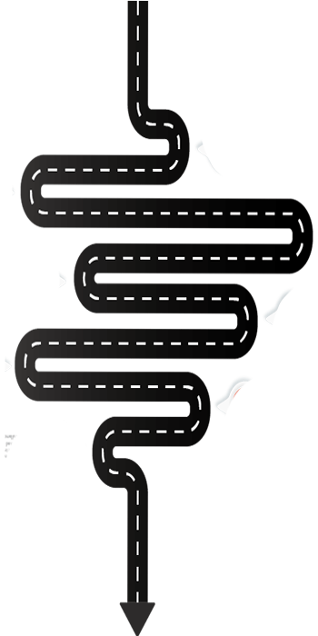

Our consultants are trained and experienced in providing you with all the necessary information and guidelines about admission and visa application process and required preparations from your end. Our consultants have an in-depth understanding of students needs and career aspirations
We offer you admission counselling for undergraduate, post graduate and doctoral level programs. A week before travelling we hold a departure dinner whereby we invite students and their parents and we take them through the whole process of admission and settling in Poland
In Poland our students are picked up from the airport by our loving team of Edu-thrive consultants who will take them to their places of accomodation,grocery shopping,opening of bank accounts etc. Our consultants will help them and will be with them all the way.
Read about the programmes that are on offer and choose the one you want.
Send an email to info@eduthrive.co.zw or complete the application below letting us know in your interest in studying Poland.
We discuss with you the options available to you based on the application you would have sent. We also discuss about what its like to study in Poland and the how much it would cost to study and live there.
We will send you the application forms you are only required to fill them in and we will submit them for you.
The university will send you an offer letter once your application has been successful, you will need to accept this offer via email.
We will provide you with housing options to choose from and you will decide which best suit you. We assist with the leases and communication with landlords
After successful payment you'll recieve a Final Acceptance Letter and the supporting letter to the Polish Embassy that will enable you to apply for a student visa.
We will assist with the visa application by ensuring you have all the necesssary details.
All course participants must complete registration in person at International Admissions office at the University.